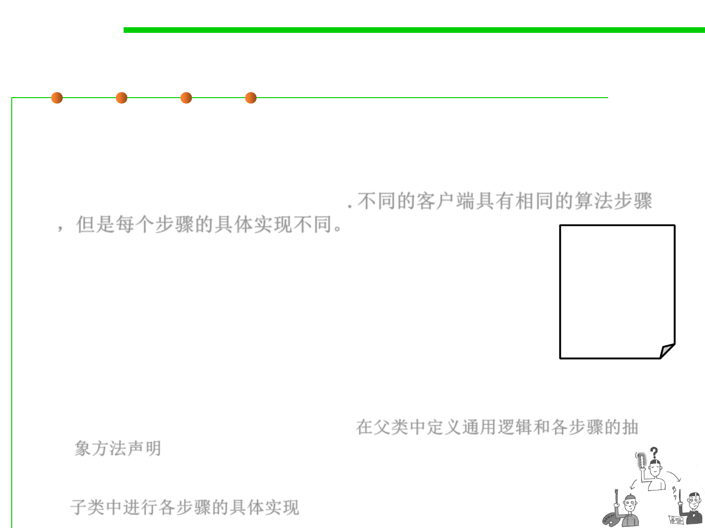

Template Method Motivation
5.3 Design Patterns for Reuse
▪ Problem: Several clients share the same algorithm but differ on the
specifics, i.e., an algorithm consists of customizable parts and
invariant parts. Common steps should not be duplicated in the
subclasses but need to be reused. 不同的客户端具有相同的算法步骤
，但是每个步骤的具体实现不同。
▪ Examples:
step1();
…
– Executing a test suite of test cases
– Opening, reading, writing documents of different types
step2();
…
step3();
▪ Solution:
– The common steps of the algorithm are factored out into an abstract class,
with abstract (unimplemented) primitive operations representing the
customizable parts of the algorithm.在父类中定义通用逻辑和各步骤的抽
象方法声明
– Subclasses provide different realizations for each of these steps.
子类中进行各步骤的具体实现